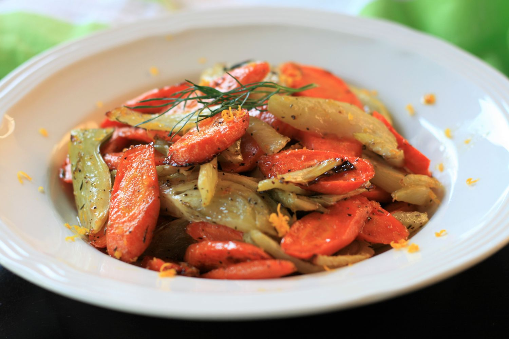

Orange-Maple Roasted Carrots and Fennel

Roasting carrots and fennel brings out their natural sweetness; tossing them with maple and orange zest takes them to a whole other level! This simple recipe pairs well with roasted pork or grilled fish.
ingredients
- 4 medium carrots, washed and trimmed
- 1 meium fennel bulb
- 1/2 teaspoon salt
- 1/4 teaspoon black pepper
- 2 tablespoons olive oil
- 1/4 teaspoon dried thyme
- 1 tablespoon maple syrup
- 3/4 teaspoon grated orange zest
how to prepare
- Preheat the oven to 425 degrees F (220 degrees C). Line a baking sheet with parchment paper.
- Cut carrots on the diagonal into 1/4 inch slices. Place in the center of the baking sheet. Trim the bottom off the fennel and cut off any green parts and fronds from the top. Cut fennel bulb in half, then cut each half into into 1/4-inch thick slices. Place on the baking sheet with the carrots. Sprinkle with salt, pepper, and thyme. Drizzle with olive oil and toss vegetables to coat evenly. Spread in a single layer on baking sheet.
- Roast in the preheated oven until soft, turning vegetables halfway through, about 20 minutes. During the last 5 minutes, drizzle vegetables with maple syrup and sprinkle with orange zest. Toss gently to combine, and return to the oven. Serve immediately. Garnish with additional orange zest, if desired.
Home Page